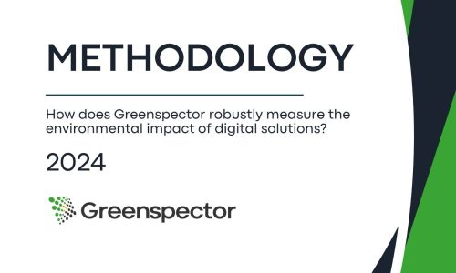
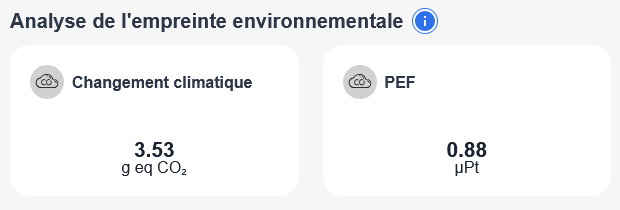
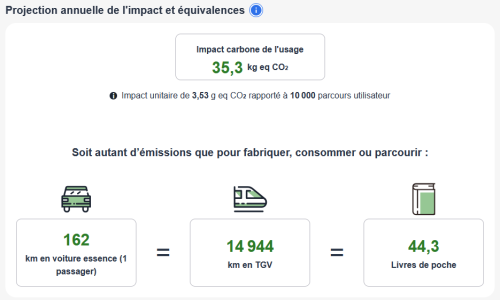
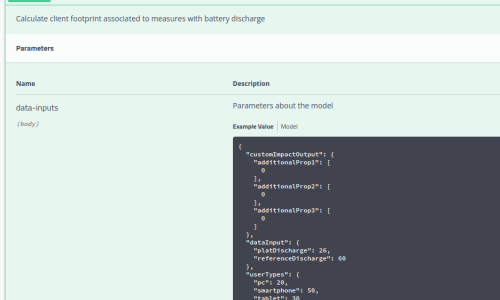
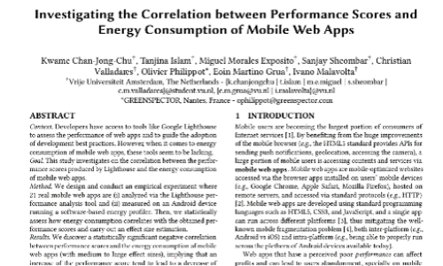

Greenhouse gases
kg CO2eq
Greenspector Studio
A multi-criteria assessment of environmental impacts across the full lifecycle.
Methodology
Our exclusive methodology is the result of over 12 years of R&D. Rigorous and precise, it is compatible with recognised industry standards.
Assessment is based on user journey measurements in real conditions (devices, networks), with direct measurement of energy consumed to ensure high accuracy.
Quantifying impacts is essential. Understanding their causes is even more so. Greenspector Studio helps your teams target concretely what needs improving.

Direct measurement
Energy consumption on the user device is a determining factor of a digital service's environmental impact. Without this measurement, much of real behaviour is ignored.
With Greenspector Studio, you identify the most significant impact causes to take truly effective reduction actions.

Multi-criteria
kg CO2eq
kg mol H+ eq
kBq U235 eq
kg Sb eq
Disease incidence rate
kg NMVOC eq
MJ
CTUe
Criteria marked ADEME are aligned with digital service RCPs, as a declination of the European PEF methodology.

Ecoscore
Each journey step is assessed on three axes: display time, energy consumption and data consumption. For each axis, steps are categorised then converted to a score from 0 to 100.
The final ecoscore combines critical (70%) and non-critical (30%) steps to better reflect real usage.

What they say
To ensure maximum ecoscore reliability, teams relied on Greenspector, which reliably assesses the environmental impact of a health application.
Greenspector is based on measurement throughout the real usage journey, not solely on loading a home page.
Certificate
If your journey ecoscore is above 50/100, you can request approval of your measurement to obtain our certificate, as well as a badge publishable on your digital channels.
Business integration
Results from our impact model can be used in your GHG reports or life cycle analyses. Each value is provided with its uncertainty level for greater transparency.
Our API also lets you automate recalculations, hypothesis scenarios and integration with your management tools.


R&D
For over 12 years, we have innovated in measuring and assessing the impact of digital services. This work has led to numerous scientific publications and presentations at international conferences.

Standards
Solution recognised for its environmental efficiency and measurement rigour.
A methodology powered by R&D and international publications.
LCA (ISO 14040), Green Software Foundation SCI, ADEME RCP and related frameworks.
References
To combine environmental responsibility, user satisfaction and application performance.